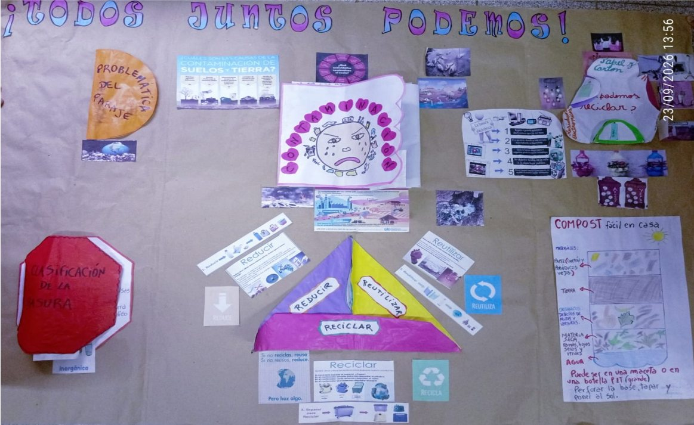
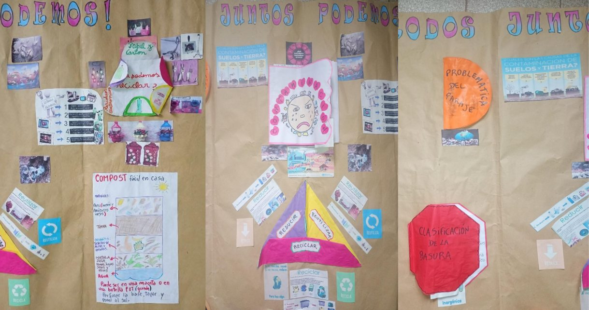
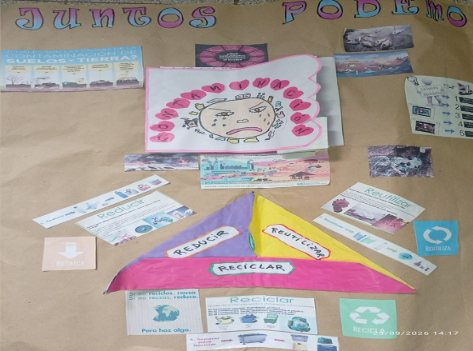
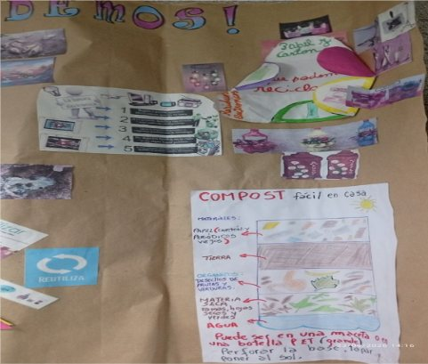
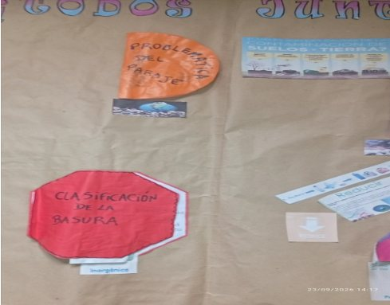

Cuidar el medio ambiente es una responsabilidad de todos. En Blancura Centro, mantener los espacios limpios y libres de basura es fundamental para disfrutar de un lugar agradable, saludable y seguro. Por eso, es importante comenzar a tomar hábitos sencillos, como reciclar plástico, latas, cartones y otros materiales que pueden tener una segunda utilidad.

El reciclaje es una de las acciones más importantes para reducir la cantidad de residuos que generamos diariamente. Separar los plásticos, las latas, el papel y el cartón permite que estos materiales puedan ser utilizados o transformados en nuevos productos, evitando que terminen acumulados en las calles o en lugares inadecuados.

Además, evitar la concentración de basura ayuda a prevenir malos olores, la aparición de insectos y otros problemas que pueden afectar la salud y el bienestar de las personas. Mantener Blancura Centro limpio también contribuye a crear un ambiente más agradable para quienes viven, trabajan o transitan por la zona.

Cada persona puede colaborar
Cada persona puede colaborar con pequeñas acciones:
- Utilizar los cestos de basura.
- Separar los residuos reciclables.
- No arrojar desperdicios en la vía pública.
- Enseñar a familiares y vecinos la importancia de mantener limpio el entorno.
Cuando todos colaboramos, los resultados pueden ser mucho mayores.

Reflexión final
Cuidar el medio ambiente en Blancura Centro es una tarea que nos corresponde a todos. Reciclar plásticos, latas y otros materiales, además de evitar la acumulación de basura, son acciones sencillas que pueden generar un gran cambio. Si cada persona aporta su granito de arena, podremos construir un Blancura Centro más limpio, saludable y agradable para el presente y para las futuras generaciones.

Un espacio limpio es responsabilidad de todos y también es un beneficio para todos.